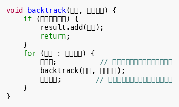
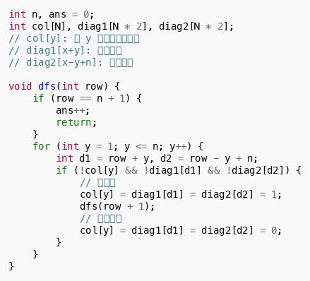
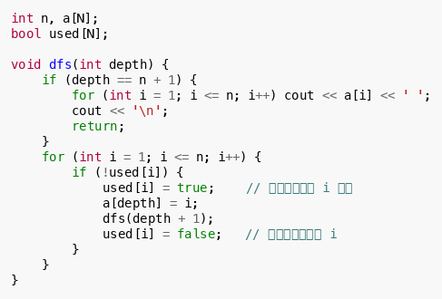
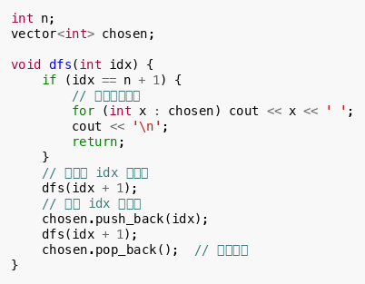
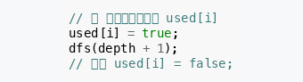
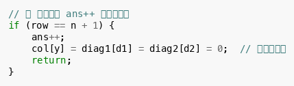
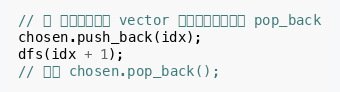

回溯法是 DFS 的一种特殊形式，其核心特征是：在搜索过程中需要维护一个"全局状态"来记录当前的选择，并且在递归返回时必须将这个状态撤销。
通俗地说：栈式深搜是"走过了就标记，不再回头"；回溯法是"试一试，不行就撤销，再试别的"。
核心框架
所有回溯问题都可以抽象为同一个代码框架：

三要素： 1. 路径：已经做出的选择 2. 选择列表：当前可以做的选择 3. 结束条件：到达决策树底层，无法再做选择
经典例题：N 皇后
在 的棋盘上放置
个皇后，使其互不攻击。

每放完一个皇后，递归进入下一行；递归返回时，必须把这个皇后的位置清空，才能尝试下一列。
经典例题：全排列
枚举 的所有排列。

经典例题：子集枚举
从 个元素中选出若干，枚举所有子集。

回溯法与栈式深搜的对比
| 维度 | 栈式深搜 | 回溯法 |
|---|---|---|
| 是否需要全局状态 | ❌ 不需要 | ✅ 需要（如 used[], col[]） |
| 是否需要撤销操作 | ❌ 不需要 | ✅ 必须撤销 |
| 状态空间 | 每个节点只访问一次 | 同一节点可能多次访问（在不同路径中） |
| 典型问题 | 连通块、图遍历 | 排列、组合、子集、N 皇后、数独 |
| CSP 出现频率 | 第 2 题 | 第 2~3 题 |
常见陷阱
陷阱 1：忘记撤销

后果：后续分支无法使用 i，导致漏解或死循环。
陷阱 2：在叶子节点撤销

后果：叶子节点不应该撤销，撤销应该在 for 循环的当前层完成。
陷阱 3：全局变量污染

后果：不同递归分支的路径相互干扰。